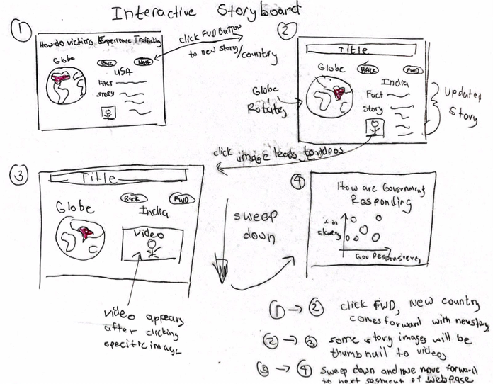

The Process Book
What we've been through.
Project Plan
This week, we have established our problem definition and performed some preliminary data research. The following illustrates the motivation of our project. The overarching goal of our project is to bring awareness to this issue in three primary ways:
- Visualize data related to the current human trafficking crisis, from the gravity of its victims’ exploitation (in quantitative and qualitative forms), as well as its international distribution.
- Visualize data corresponding to current efforts being expended to mitigate the negative effects of the human trafficking crisis, particularly government accountability and legislation indicators published by non-governmental organizations.
- Demonstrate, through a combination of data visualizations, textual descriptions, and a compelling website interface, that there is a strong impetus -- and way -- for all of us to participate in the fight against human trafficking.
Our preliminary ideas for sketches include the following:
Sketches


Interactions

Webpage Layout


These visualizations offer a combination of geographic and non-geographic context surrounding human trafficking. One area we hope to elucidate in the upcoming week is: can we obtain time-series data regarding human traffic? To what extent can we implement visualization that represents data over time as opposed to at one particular point in time.
This week, we also signed the team expectations form and identified a role-playing rotational system: every week, after tasks and goals are set, we divide responsibilities between a Coordinator, Recorder, and Checker. This way, we can maintain accountability while ensuring that all tasks get completed with high quality and integrity. We will define particular features and implementations that should be completed that week along with the divisions of each roles. By the end of the project, the intention is for everybody in the team to have played every role at least once.
Finally, this week we developed a project timeline that matches the due dates prescribed by CS171 instructors with realistic goals in the context of our own visualizations. We will observe this timeline as closely as possible and make necessary adjustments as per our implementation progress between studios, labs, lectures, and time at home.
Prototype 1
This week, we made progress on the basic outline of our website as well some primary visualizations. The website currently has the following outline:
- First, we will explain to the viewer what human trafficking is, from the basic forms of exploitation to some contextual information behind why it exists and persists in the world today.
- Then, we will demonstrate to viewers how trafficking is a global problem, through a world globe interface visualizations. The globe will cycle through various countries of interest and show cases of particular trafficking victims, hereby introducing the storytelling element and guiding a viewer through the subjectivity of a human trafficking victim 
- We will then guide the user through a compelling visualization telling a story of what the numbers mean, placing and contextualizing emphasis on the gravity of the current crisis.
- Then, we will give an overview of what governments are currently doing to prevent the spread of this issue, through a scatter plot of general government responsiveness to % of trafficking victims in that country’s population. This scatter plot will be filterable by region.
- Finally, we will include a section on what we can do to get involved in this issue. A d3 visualization may or may not be part of this section, however the call to action will be crucial in inspiring change for the viewer.
This week, we worked independently on various parts of the visualization and remain to work on a strategy for properly integrating our various changes. While Github seems to be a reasonable tool, simultaneously working on the index file while adding and subtracting elements will be a challenge we look forward to engaging with as the visualizations progress. Our communication channel remains constant over Slack and tasks will be well defined for the upcoming week on Tuesday.
Data-wise, we recently discovered a UN database of legal cases in human trafficking. While the proportions of cases from country to country don't really reflect where trafficking is the most prevalent, it does provide information on the demographics of individual victims -- things like age, country of origin, gender, etc. This would be difficult to scrape and aggregate, but it's something we could look into if we have a pressing need for data on trafficking victims.
New feature
Cum sociis natoque penatibus et magnis dis parturient montes, nascetur ridiculus mus. Aenean lacinia bibendum nulla sed consectetur. Etiam porta sem malesuada magna mollis euismod. Fusce dapibus, tellus ac cursus commodo, tortor mauris condimentum nibh, ut fermentum massa justo sit amet risus.
- Praesent commodo cursus magna, vel scelerisque nisl consectetur et.
- Donec id elit non mi porta gravida at eget metus.
- Nulla vitae elit libero, a pharetra augue.
Etiam porta sem malesuada magna mollis euismod. Cras mattis consectetur purus sit amet fermentum. Aenean lacinia bibendum nulla sed consectetur.
Donec ullamcorper nulla non metus auctor fringilla. Nulla vitae elit libero, a pharetra augue.